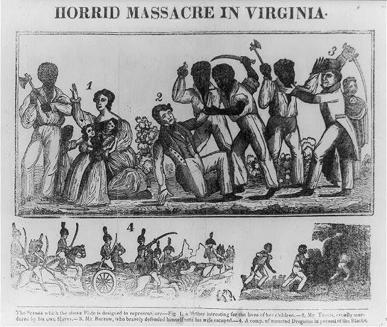
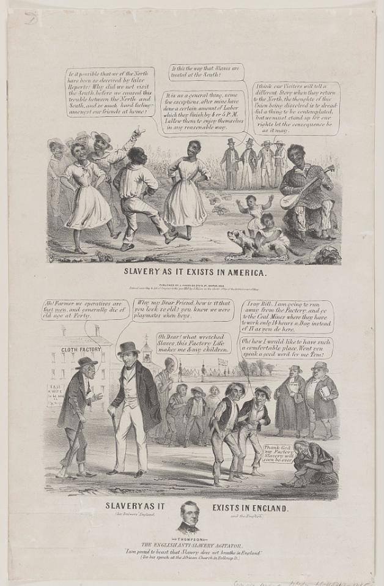
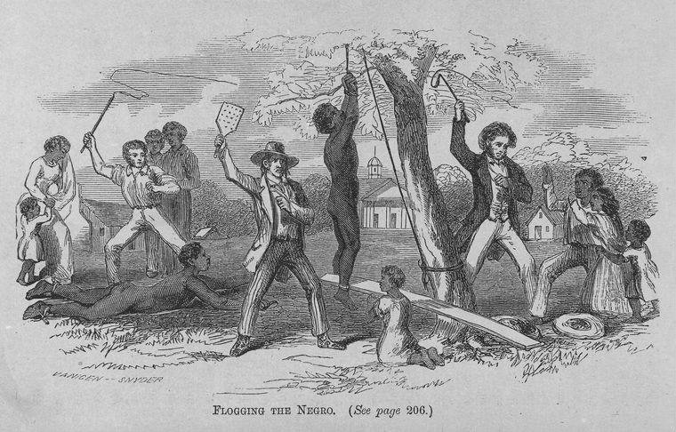

PRIMARY SOURCE S11.7
Images of Slavery and Resistance: Horrid Massacre in Virginia; Slavery as It Exists in America; a Runaway Reward Broadside; a Public Whipping in Lexington, Missouri
Various artists and printers · 1831–1864
| Field | Detail |
| TOC Fit | Chapter 11 · Essay prompt 11.3 (The Nature of Slavery); Essay prompt 11.4 (Forms of Resistance) |
| Why Here | Four printed images show how slavery and resistance were pictured for different audiences: a sensational woodcut of Nat Turner’s 1831 revolt, a proslavery cartoon contrasting “contented” American slaves with British factory workers, an enslaver’s reward notice for five people who escaped from Missouri, and an abolitionist engraving of a court-ordered public whipping. Students can weigh what each image claims, who made it, and for whom. |
| Treatment | Public-domain images (captured separately by the lead); printed titles transcribed |
Historical Context
In August 1831 Nat Turner, an enslaved preacher in Southampton County, Virginia, led a revolt in which about sixty white people were killed; militia and vigilantes then killed many Black people, including some with no part in the rising, and Turner and others were tried and hanged. Pamphlets and woodcuts spread news of the revolt across the country. Most resistance, however, took less dramatic forms, including running away. Enslavers advertised for those who fled in newspapers and on printed broadsides that described them, offered rewards, and often named the places the runaways were thought to be heading. Both sides of the slavery debate used pictures. Defenders of slavery in the 1840s and 1850s argued that enslaved southerners were better cared for than northern or British wage workers, while abolitionists circulated images of the whip and the auction block. The Lexington whipping engraving appeared in The Suppressed Book about Slavery! (1864), an abolitionist compilation prepared before the Civil War and published during it. Editorial note. The Norton Online Reader image set could not be opened; this entry identifies public-domain copies of the same or equivalent images in the Library of Congress and the Library Company of Philadelphia. The Nat Turner woodcut is the frontispiece of Samuel Warner’s Authentic and Impartial Narrative of the Tragical Scene (New York, 1831); the Missouri broadside is the 1847 St. Louis notice for five enslaved people; the Lexington whipping is the engraving “Flogging the Negro” from The Suppressed Book about Slavery! (New York: Carleton, 1864), p. 240. Printed text on the images is given only where repository records supply it; the full wording of the cartoon captions and the broadside must be transcribed from the images. CAUTION: Each image is propaganda or advertisement. The 1831 woodcut is a composite meant to shock, not a picture of a real scene; the 1850 cartoon is proslavery; the 1864 engraving illustrates an abolitionist book describing an event of 1856; the broadside is an enslaver’s description of people who escaped from him. The Library Company of Philadelphia copy of “Flogging the Negro” could not be opened (the site required a bot-verification check), so the image reproduced here is the same engraving from the copy of The Suppressed Book about Slavery! held by the Schomburg Center, New York Public Library; the plate itself is captioned “See page 206.” Text transcribed for this reader from the repository image; illegible words are marked [illegible]. |
Document Text
1. Horrid Massacre in Virginia (woodcut, 1831)
HORRID MASSACRE IN VIRGINIA.
The Scenes which the above Plate is designed to represent, are—Fig. 1. a Mother intreating for the lives of her children.—2. Mr. Travis, cruelly murdered by his own Slaves.—3. Mr. Barrow, who bravely defended himself until his wife escaped.—4. A comp. of mounted Dragoons in pursuit of the Blacks.
2. Slavery as It Exists in America. Slavery as It Exists in England (lithograph cartoon, Boston, 1850)
[Upper scene, balloons, left to right:] “Is it possible that we of the North have been so deceived by false Reports: Why did we not visit the South before we caused this trouble between the North and South, and so much hard feeling amongst our friends at home!”
“Is this the way that Slaves are treated at the South!”
“It is as a general thing, some few exceptions, after mine have done a certain amount of Labor which they finish by 4 or 5 P.M. I allow them to enjoy themselves in any reasonable way.”
“I think our Visitors will tell a different Story when they return to the North, the thoughts of this Union being dissolved is to dreadful a thing to be contemplated, but we must stand up for our rights let the consequence be as it may.”
SLAVERY AS IT EXISTS IN AMERICA. [Imprint:] Published by J. Haven, 86 State St. Boston, 1850.
[Lower scene, balloons:] “Ah! Farmer we operatives are fast men, and generally die of old age at Forty.” — “Why my Dear Friend, how is it that you look so old? you know we were playmates when boys.” — “Oh Dear! what wretched Slaves, this Factory Life makes me & my children.”
“I say Bill, I am going to run away from the Factory, and go to the Coal Mines where they have to work only 14 hours a Day instead of 17 as you do here.” — “Oh! how I would like to have such a comfortable place. Wont you speak a good word for me Tom?” — “Thank God my Factory Slavery will soon be over.”
SLAVERY AS IT EXISTS IN ENGLAND. (See Bulwer's England and the English.) THOMPSON, THE ENGLISH ANTI-SLAVERY AGITATOR. “I am proud to boast that Slavery does not breathe in England.” (In his speech at the African Church in Belknap St.)
3. Runaway Reward Broadside (St. Louis, 1847)
$200 Reward. RANAWAY from the subscriber, on the night of Thursday, the 30th of Sepember, FIVE NEGRO SLAVES, To-wit: one Negro man, his wife, and three children.
The man is a black negro, full height, very erect, his face a little thin. He is about forty years of age, and calls himself Washington Reed, and is known by the name of Washington. He is probably well dressed, possibly takes with him an ivory headed cane, and is of good address. Several of his teeth are gone.
Mary, his wife, is about thirty years of age, a bright mulatto woman, and quite stout and strong.
The oldest of the children is a boy, of the name of FIELDING, twelve years of age, a dark mulatto, with heavy eyelids. He probably wore a new cloth cap.
MATILDA, the second child, is a girl, six years of age, rather a dark mulatto, but a bright and smart looking child.
MALCOLM, the youngest, is a boy, four years old, a lighter mulatto than the last, and about equally as bright. He probably also wore a cloth cap. If examined, he will be found to have a swelling at the navel.
Washington and Mary have lived at or near St. Louis, with the subscriber, for about 15 years.
It is supposed that they are making their way to Chicago, and that a white man accompanies them, that they will travel chiefly at night, and most probably in a covered wagon.
A reward of $150 will be paid for their apprehension, so that I can get them, if taken within one hundred miles of St. Louis, and $200 if taken beyond that, and secured so that I can get them, and other reasonable additional charges, if delivered to the subscriber, or to THOMAS ALLEN, Esq., at St. Louis, Mo. The above negroes, for the last few years, have been in possession of Thomas Allen, Esq., of St. Louis.
WM. RUSSELL. ST. LOUIS, Oct. 1, 1847.
4. A Public Whipping of Slaves in Lexington, Missouri, in 1856 (engraving, 1864)
FLOGGING THE NEGRO. (See page 206.) [Engravers' signature, lower left:] VANINGEN—SNYDER
Primary Source Images
|
 |
Horrid Massacre in Virginia. Woodcut, [1831]. Frontispiece to Samuel Warner, Authentic and Impartial Narrative of the Tragical Scene Which Was Witnessed in Southampton County (New York, 1831). Library of Congress, Rare Book and Special Collections Division, Illus. in F232.S7 W2.
|
 |
Slavery as It Exists in America. Slavery as It Exists in England. Lithograph (Boston: Published by J. Haven, 1850). Library of Congress, Prints and Photographs Division, PC/US - 1850.H385, no. 1 (B size).

|
$200 Reward. Ranaway from the Subscriber, on the Night of Thursday, the 30th of Sepember, Five Negro Slaves. Broadside (St. Louis, 1847). Library of Congress, Rare Book and Special Collections Division, Broadside Coll., vol. 86, no. 2.
|
 |
Van Ingen & Snyder, wood engravers, Flogging the Negro (“See page 206”) [a public whipping in Lexington, Missouri, 1856]. Wood engraving, in The Suppressed Book about Slavery! (New York: Carleton, 1864). Schomburg Center for Research in Black Culture, Manuscripts, Archives and Rare Books Division, The New York Public Library, Sc Rare 326.4-S.
Chicago Citations
Horrid Massacre in Virginia
Bibliography Entry
Horrid Massacre in Virginia. Woodcut. New York, 1831. Library of Congress, Prints and Photographs Division. https://www.loc.gov/pictures/item/98510363/.
Footnote Citation (Example)
1. Horrid Massacre in Virginia, woodcut (New York, 1831), Library of Congress, Prints and Photographs Division, LC-USZ62-38902, https://www.loc.gov/pictures/item/98510363/.
Shortened Citation
Horrid Massacre in Virginia.
Slavery as It Exists in America
Bibliography Entry
Slavery as It Exists in America. Slavery as It Exists in England. Lithograph. Boston: J. Haven, 1850. Library of Congress, Prints and Photographs Division. https://www.loc.gov/pictures/item/2008661524/.
Footnote Citation (Example)
1. Slavery as It Exists in America. Slavery as It Exists in England, lithograph (Boston: J. Haven, 1850), Library of Congress, Prints and Photographs Division, LC-DIG-ds-12543, https://www.loc.gov/pictures/item/2008661524/.
Shortened Citation
Slavery as It Exists in America.
$200 Reward broadside
Bibliography Entry
$200 Reward. Ranaway from the Subscriber, on the Night of Thursday, the 30th of Sepember, Five Negro Slaves. Broadside. St. Louis, 1847. Library of Congress, Rare Book and Special Collections Division. https://www.loc.gov/pictures/item/2005684861/.
Footnote Citation (Example)
1. $200 Reward. Ranaway from the Subscriber . . . Five Negro Slaves, broadside (St. Louis, 1847), Library of Congress, Rare Book and Special Collections Division, LC-USZ62-62797, https://www.loc.gov/pictures/item/2005684861/.
Shortened Citation
$200 Reward.
Flogging the Negro (Lexington, Missouri)
Bibliography Entry
Van Ingen & Snyder, engravers. Flogging the Negro. Engraving. In The Suppressed Book about Slavery!, 240. New York: Carleton, 1864. Library Company of Philadelphia. https://digital.librarycompany.org/islandora/object/Islandora%3A2811.
Footnote Citation (Example)
1. Van Ingen & Snyder, engravers, Flogging the Negro, engraving, in The Suppressed Book about Slavery! (New York: Carleton, 1864), 240, Library Company of Philadelphia, https://digital.librarycompany.org/islandora/object/Islandora%3A2811.
Shortened Citation
Van Ingen & Snyder, Flogging the Negro.
Image Credits, Rights, and Related Links
Library of Congress, Prints and Photographs Division, LC-USZ62-38902. Rights: No known restrictions on publication (Library of Congress). https://www.loc.gov/pictures/item/98510363/.
Library of Congress, Prints and Photographs Division, LC-DIG-ds-12543. Rights: No known restrictions on publication (Library of Congress). https://www.loc.gov/pictures/item/2008661524/.
Library of Congress, LC-USZ62-62797. Rights: No known restrictions on publication (Library of Congress). https://www.loc.gov/pictures/item/2005684861/.
From The New York Public Library, Schomburg Center for Research in Black Culture (Image ID 413750). Rights: Published 1864; public domain. The New York Public Library believes this item is in the public domain under the laws of the United States. https://digitalcollections.nypl.org/items/80100030-c622-012f-d612-58d385a7bc34.